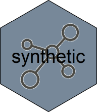

Overview
The synthetic package provides tooling to greatly symplify benchmarking of serialization solutions such as fst, arrow, feather, fread/fwrite or sqlite. By using a standardized method of benchmarking, results become more reliable and more easy to compare. It also contains advanced tools for creration of synthetic datasets from existing datasets of from pre-defined column generators.
Features
Benchmarks performed With synthetic have the following features:
- Each measurement of serialization speed uses a unique dataset (avoid disk caching)
- A read is not executed immediately after a write of the same dataset (avoid disk caching)
- All (column-) data is generated on the fly using predefined generators (no need to download large test sets)
- A wide range of data profiles can be used for the creation of synthetic data (understand dependencies on data format and profile)
- Object- en file sizes are recorded and speeds automatically calculated (reproducible results)
- A progress bar shows percentage done and time remaining (know when to go and get a cup of coffee)
- Only the actual serialization speed is benchmarked (measure only what must be measured)
- Multithreaded solutions are correctly measured (unlike some benchmark techniques)
But most importantly, with the use of synthetic, complex benchmarks are reduced to a few simple statements, increasing your productivity and reproducibility!
Walkthrough: setting up a benchmark
A lot of claims are made on the performance of serializers and databases, but the truth is that all solutions have their own strenghts and weaknesses.
some more text here
Define the template of a test dataset:
library(synthetic)
library(fst)
library(arrow)
# generator for 'fst benchmark' dataset
generator <- table_generator(
"fst benchmark",
function(nr_of_rows) {
data.frame(
Logical = sample_logical(nr_of_rows, true_false_na_ratio = c(85, 10, 5)),
Integer = sample_integer(nr_of_rows, max_value = 100L),
Real = sample_integer(nr_of_rows, 1, 10000, max_distict_values = 20) / 100,
Factor = as.factor(sample(labels(UScitiesD), nr_of_rows, replace = TRUE))
)}
)Do some benchmarking on the fst format:
library(dplyr)
synthetic_bench() %>%
bench_generators(generator) %>%
bench_streamers(streamer_fst()) %>%
bench_rows(1e7) %>%
collect()Congratulations, that’s your first structured benchmark :-)
Now, let´s add a second streamer and allow for two different sizes of datasets:
synthetic_bench() %>%
bench_generators(generator) %>%
bench_streamers(streamer_fst(), streamer_parguet()) %>% # two streamers
bench_rows(1e7, 5e7) %>%
collect()As you can see, although benchmarking two solutions at different sizes is more complex than the single solution benchmark, with synthetic it´s just a matter of expanding some of the arguments.
Let´s add two more streamers and add compression settings to the mix: